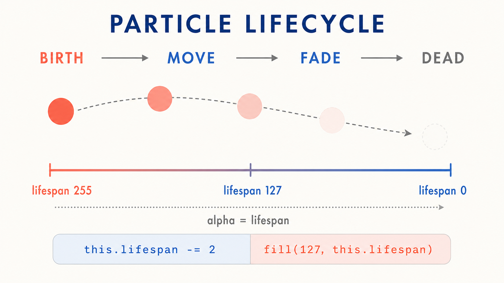
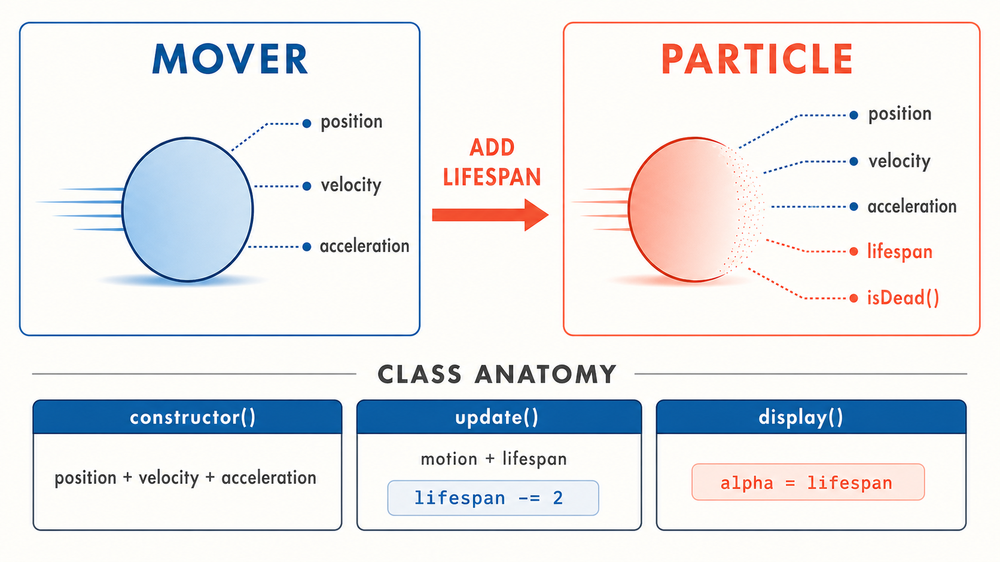
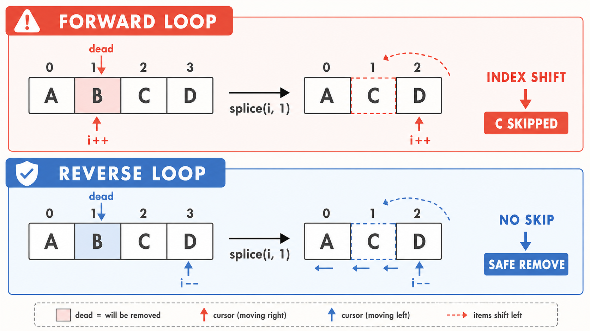
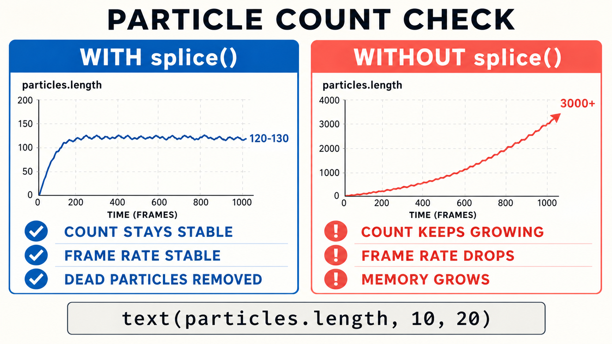

13주차 1교시 — 파티클의 탄생과 소멸
강의 아웃라인: week-13-outline 다음 교시: week-13-period2-student (Emitter와 파티클 이펙트)
| 항목 | 내용 |
|---|---|
| 대상 | P5.js 입문자 (테크아트 전공, 7주차 클래스·9주차 벡터·10주차 힘·12주차 노이즈 학습 완료) |
| 소요 시간 | 45분 |
| 기반 교재 | Nature of Code — Chapter 4: Particle Systems |
- ✅ Particle 클래스를 설계하고 수명(lifespan)과 페이드아웃을 구현할 수 있습니다
- ✅ 배열에
push()로 파티클을 생성하고splice()로 소멸 처리할 수 있습니다 - ✅ 배열을 역순으로 순회해야 하는 이유를 설명할 수 있습니다
도입
12주차에서 이어서 — “그 점들에 수명을 넣으면?”
지난주 2교시 Flow Field에서 점 100개가 보이지 않는 바람을 따라 화면을 흐르는 모습을 봤습니다. 그 점들은 한 가지 특징이 있었습니다 — 한 번 생기면 끝나지 않았습니다. 화면 밖으로 나가면 다시 안쪽으로 옮겨놓을 뿐, 사라지는 일은 없었습니다.
오늘은 그 점에 한 가지를 더 줍니다. 바로 수명(lifespan)입니다. 태어나고, 잠깐 움직이다가, 점점 옅어지면서 사라지는 점 — 그것이 파티클(particle)입니다.
노이즈로 만든 유기적인 움직임에 ’수명 있는 입자’를 합치면 연기, 불꽃, 눈 같은 시각 효과가 됩니다. 기말 프로젝트에서 쓰기 좋은 재료입니다.
파티클 시스템이란?
불꽃놀이가 터지는 순간 수백 개의 빛 조각이 사방으로 퍼졌다가 하나씩 사라집니다. 피어오르는 연기도, 내리는 눈도 마찬가지입니다. 작은 입자 수천 개가 각각 다른 속도로, 다른 경로로 움직입니다.
이 현상들의 공통점은 — 아주 많은 개별 입자가 생겨나고, 각자 움직이고, 결국 사라진다는 것입니다. 이것을 코드로 표현하는 기법이 오늘 배울 파티클 시스템(Particle System)입니다.
오늘 할 일
이번 시간이 끝나면 다음 세 가지를 할 수 있게 됩니다.
- Particle 클래스를 설계하고 수명과 페이드아웃을 구현한다
- 배열에서 수명이 다한 파티클을
splice()로 안전하게 제거한다 - 수백 개의 파티클이 생성·소멸하는 시스템의 기본 구조를 이해한다
지금까지 배운 것과의 연결
오늘 배울 내용은 완전히 새로운 것이 아니라, 이미 가진 도구들의 조합입니다.
- 7주차 클래스 — 객체를 설계하는 방법. 파티클도 하나의 클래스입니다.
- 9주차 벡터 — 위치, 속도, 가속도. 파티클이 움직이는 원리 그 자체입니다.
- 10주차 힘 — 중력을 적용하면 파티클이 아래로 떨어집니다.
- 12주차 노이즈 — 유기적인 움직임. 2교시 이펙트 기법에서 다시 등장합니다.
여기에 수명(lifespan)이라는 개념 하나만 추가하면 파티클이 완성됩니다.
💡 핵심 개념 1 — 파티클 = 움직이는 객체 + 수명
9~10주차에서 만들었던 Mover 클래스를 떠올려 봅니다.
위치(position), 속도(velocity), 가속도(acceleration)가 있었습니다. 힘을
적용하면 가속도가 바뀌고, 가속도가 속도를 바꾸고, 속도가 위치를 바꾸는
패턴이었습니다.
파티클은 여기에 한 가지 개념만 추가하면 됩니다. 바로 수명(lifespan)입니다.
비유하자면, Mover가 ’수명 제한이 없는 공’이라면 Particle은 ‘촛불’입니다. 태어나는 순간부터 수명이 정해져 있고, 시간이 지나면서 점점 약해지다가 결국 꺼집니다.
수명은 lifespan이라는 숫자를 255에서 시작해 매 프레임 조금씩 줄여나가는 방식으로 구현합니다. 왜 하필 255냐면 — p5.js에서 색상의 알파(투명도) 값 범위가 0~255이기 때문입니다. lifespan 값을 그대로 알파에 넣으면, 수명이 줄어들수록 자연스럽게 투명해집니다. 이것이 바로 페이드아웃(fade-out) 효과입니다.
lifespan: 255 → 완전 불투명 (방금 태어남)
lifespan: 127 → 반투명 (수명 절반 남음)
lifespan: 0 → 완전 투명 (소멸)
lifespan을 매 프레임 2씩 줄인다면, 파티클이 대략 몇 프레임 동안 살아있을까요?
답: 약 127~128프레임. 60fps 기준 약 2초.
💡 핵심 개념 2 — Particle 클래스 설계
7주차에서 클래스를 만들 때의 패턴을 떠올려 봅니다 —
constructor, 메서드들, 그리고 프로퍼티. Particle 클래스의
전체 구조는 다음과 같습니다.

class Particle {
constructor(x, y) {
this.position = createVector(x, y);
// 초기 속도: 위쪽으로 살짝 퍼지는 랜덤 방향
this.velocity = createVector(random(-1, 1), random(-2, 0));
// 가속도: 중력 (아래 방향)
this.acceleration = createVector(0, 0.05);
// 수명: 255에서 시작
this.lifespan = 255;
}
update() {
// 9주차에서 배운 벡터 물리 업데이트
this.velocity.add(this.acceleration);
this.position.add(this.velocity);
// 매 프레임 수명 감소
this.lifespan -= 2;
}
display() {
// lifespan을 알파 값으로 사용 → 페이드아웃!
stroke(0, this.lifespan);
fill(127, this.lifespan);
ellipse(this.position.x, this.position.y, 12);
}
// 이 파티클이 소멸 대상인지 확인
isDead() {
return this.lifespan < 0;
}
}한 부분씩 살펴봅니다.
constructor(x, y) - position: 파티클이
태어나는 위치. 나중에 마우스 위치를 넣습니다. - velocity:
random(-1, 1)과 random(-2, 0)으로 약간씩 다른
방향으로 퍼져나갑니다. 파티클마다 움직임이 다른 비결입니다. -
acceleration: 중력. 아주 작은 값(0.05)이면 충분합니다.
파티클이 천천히 아래로 떨어지게 합니다. - lifespan: 255에서
시작. 이 숫자가 0 아래로 내려가면 소멸 대상으로 판단합니다.
update() - 9주차에서 익숙한 패턴입니다: 가속도 →
속도, 속도 → 위치. - 여기에 this.lifespan -= 2 한 줄이
추가됐습니다. 이것이 파티클의 핵심입니다.
display() - fill(127, this.lifespan) —
두 번째 인자가 알파(투명도)입니다. lifespan이 줄면 투명해집니다. -
stroke(0, this.lifespan) — 테두리도 같이 투명해져야
자연스럽습니다.
isDead() - lifespan이 0 미만이면 true를
반환합니다. 단 한 줄이지만 아주 중요한 메서드입니다.
단일 파티클을 화면에 띄우는 코드입니다.
let p;
function setup() {
createCanvas(640, 360);
p = new Particle(width / 2, 20);
}
function draw() {
background(220);
p.update();
p.display();
// 수명이 끝나면 새로 생성
if (p.isDead()) {
p = new Particle(width / 2, 20);
}
}실행하면 파티클 하나가 위에서 생겨나 중력에 의해 떨어지면서 점점 투명해지다 사라지고, 다시 새로 생겨납니다.
this.lifespan -= 2를
this.lifespan -= 10으로 바꾸면 어떻게 될까요?
답: 수명이 5배 빠르게 줄어서 파티클이 훨씬 빨리 사라집니다. 약 25프레임, 0.4초 정도.
💡 핵심 개념 3 — 배열로 다수의 파티클 관리
파티클 하나로는 별로 인상적이지 않습니다. 파티클 시스템의 매력은 수백 개가 동시에 움직일 때 나타납니다. 배열을 사용해서 구현합니다.
기본 전략은 세 단계입니다.
- 매 프레임 새 파티클을 배열에
push() - 모든 파티클을
update()+display() - 수명이 끝난 파티클을
splice()로 제거
let particles = [];
function setup() {
createCanvas(640, 360);
}
function draw() {
background(220);
// 매 프레임 새 파티클 생성
particles.push(new Particle(width / 2, 20));
// 역순으로 순회하면서 업데이트 + 표시 + 제거
for (let i = particles.length - 1; i >= 0; i--) {
particles[i].update();
particles[i].display();
if (particles[i].isDead()) {
particles.splice(i, 1);
}
}
}여기서 아주 중요한 부분이 역순 순회입니다.
splice(i, 1)은 인덱스 i에 있는 요소를
배열에서 제거합니다. 그러면 그 뒤에 있던 모든 요소의 인덱스가 한
칸씩 앞으로 당겨집니다. 이것이 순방향 순회에서 문제를
일으킵니다.

순방향 순회에서 문제가 생기는 상황:
배열: [A, B, C, D, E] 인덱스: 0, 1, 2, 3, 4
i=0: A 확인 → 정상
i=1: B 확인 → B가 제거 대상이다. splice(1, 1) 실행
배열: [A, C, D, E] 인덱스: 0, 1, 2, 3
C가 원래 2번이었는데 이제 1번으로!
i=2: D 확인 → C를 건너뛰었다! (C는 체크 안 됨)C가 확인되기도 전에 건너뛰어졌습니다. 제거되어야 할 파티클이 한 프레임 더 남을 수 있는 것입니다.
역순 순회에서는 문제 없음:
배열: [A, B, C, D, E] 인덱스: 0, 1, 2, 3, 4
i=4: E 확인 → 정상
i=3: D 확인 → 정상
i=2: C 확인 → C가 제거 대상이다. splice(2, 1) 실행
배열: [A, B, D, E] 인덱스: 0, 1, 2, 3
D, E의 인덱스가 바뀌었지만, 이미 체크 완료!
i=1: B 확인 → 정상 (인덱스 변화 영향 없음)
i=0: A 확인 → 정상역순으로 순회하면, splice로 인한 인덱스 변화가 이미 체크한 요소들에만 영향을 미쳐서 문제가 없습니다.
배열에서 요소를 제거하면서 순회할 때는 반드시 역순으로 —
for (let i = 배열.length - 1; i >= 0; i--).
// 이 패턴을 기억합니다
for (let i = particles.length - 1; i >= 0; i--) {
// ... 작업 ...
if (조건) {
particles.splice(i, 1);
}
}배열에서 splice가 제대로 동작하는지 확인하려면, 배열의 길이를 화면에 표시해 봅니다.
// draw() 안에 추가
fill(0);
noStroke();
text("파티클 수: " + particles.length, 10, 20);
제대로 작동하면 파티클 수가 일정 범위 안에서 유지됩니다 (보통 120~130개). 만약 splice를 빼면 배열이 계속 커지면서 프레임 저하가 생깁니다.
예제 — 마우스 파티클 시스템
마우스 위치에서 파티클이 생성되는 전체 코드입니다.
let particles = [];
function setup() {
createCanvas(640, 360);
}
function draw() {
background(220);
// 마우스 위치에서 파티클 생성
particles.push(new Particle(mouseX, mouseY));
for (let i = particles.length - 1; i >= 0; i--) {
particles[i].update();
particles[i].display();
if (particles[i].isDead()) {
particles.splice(i, 1);
}
}
// 파티클 수 표시
fill(0);
noStroke();
text("파티클 수: " + particles.length, 10, 20);
}
class Particle {
constructor(x, y) {
this.position = createVector(x, y);
this.velocity = createVector(random(-1, 1), random(-2, 0));
this.acceleration = createVector(0, 0.05);
this.lifespan = 255;
}
update() {
this.velocity.add(this.acceleration);
this.position.add(this.velocity);
this.lifespan -= 2;
}
display() {
stroke(0, this.lifespan);
fill(127, this.lifespan);
ellipse(this.position.x, this.position.y, 12);
}
isDead() {
return this.lifespan < 0;
}
}값을 바꿔보며 변화를 체험해 봅니다.
- 마우스를 빠르게 움직이면 → 마우스 궤적을 따라 파티클 흔적이 생깁니다
- 마우스를 가만히 두면 → 한 지점에서 파티클이 계속 방출됩니다
lifespan감소값을2→1로 바꾸면 → 파티클이 오래 살아 더 많이 쌓입니다acceleration의 y를0.05→-0.05로 바꾸면 → 연기처럼 위로 올라갑니다
몇 가지 값을 조정해도 결과가 완전히 달라집니다. 이것이 파라미터 튜닝이고, 아트에서 가장 중요한 부분 중 하나입니다.
🏆 정리
핵심을 세 줄로 요약합니다.
- 파티클 = Mover + 수명(lifespan) — 9~10주차에서 배운 벡터 물리에 lifespan 하나만 추가하면 파티클이 된다
- 페이드아웃 — lifespan 값을 색상의 알파에 직접 넣어 자연스러운 소멸 효과를 만든다
- 배열 관리 —
push()로 생성,splice()로 제거, 반드시 역순 순회
🔥 2교시 예고
지금은 draw() 안에서 파티클 생성과 관리를 직접 합니다.
파티클 시스템이 하나일 때는 괜찮지만, 여러 개가 필요하면
draw()가 금방 복잡해집니다. 2교시에서는
Emitter(방출기) 클래스를 만들어 파티클 시스템을 더
간결하게 관리하는 방법을 배우고, 불꽃놀이 같은 이펙트도 만듭니다.